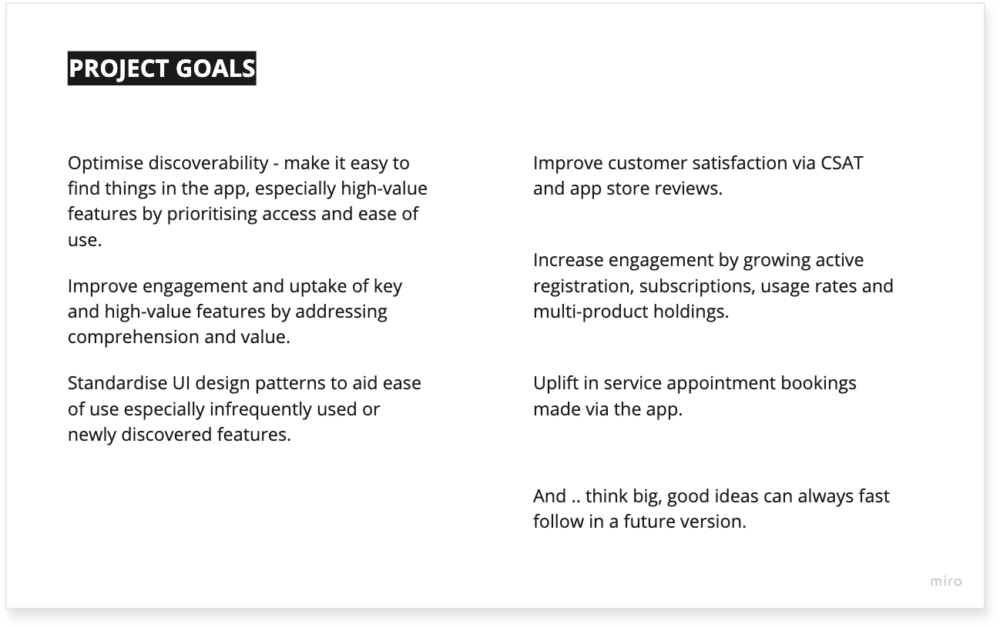
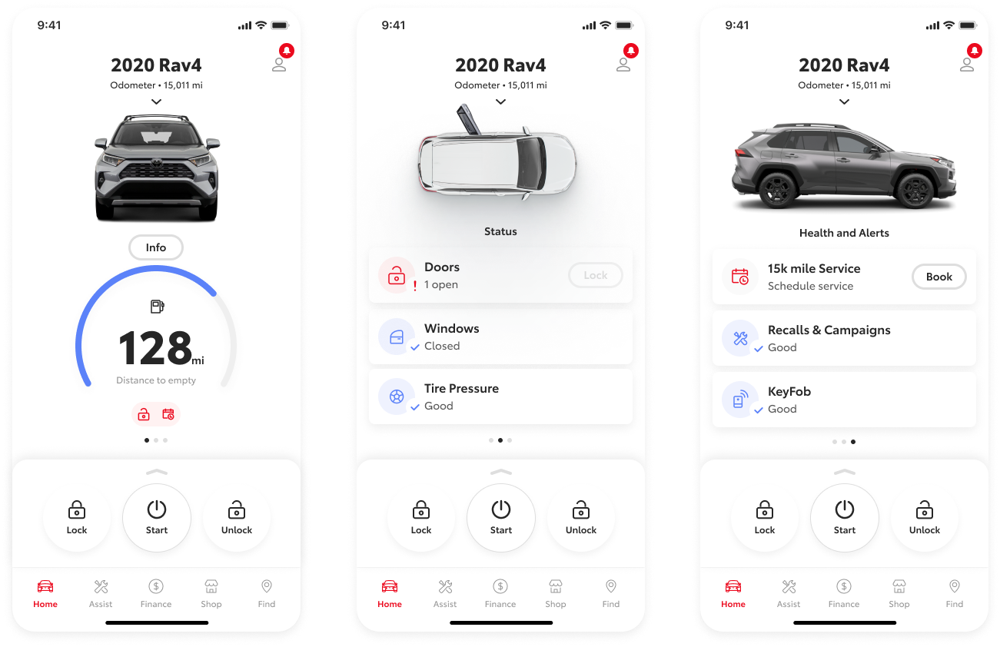
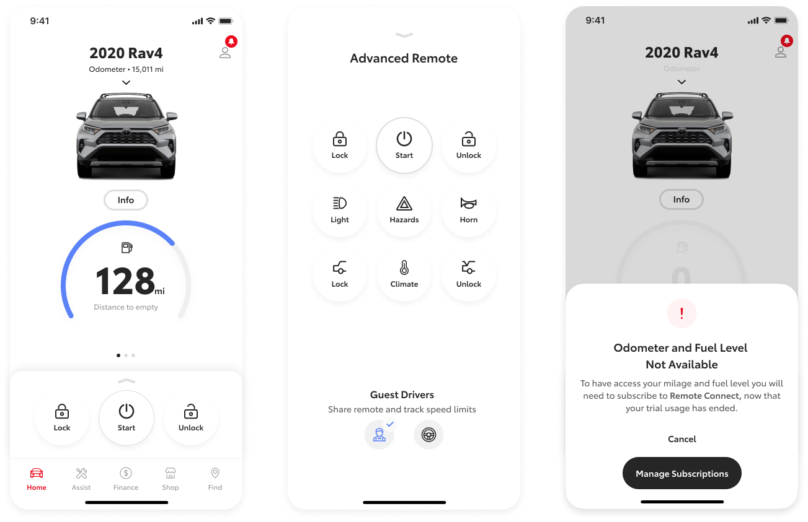
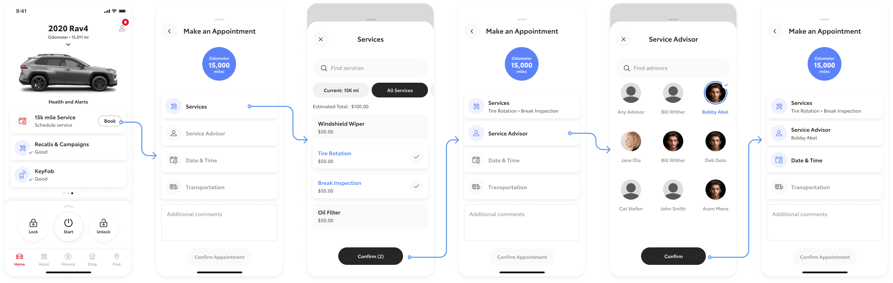

Project goals and objectives
The main goal was to improve the app’s user experience, subsequent objectives were identified with stakeholders when playing back upfront research
discoveries. I added further recommendations to objectives where appropriate.

Provided focus for this ‘quick-fix’ phase, connecting user needs and business goals.
Key design challenges
Problem: discoverability of frequently used features
- Resulting in high frequency Dashboard features encountering low usage
- Assumption that features like vehicle status and vehicle health were unintuitive to access from the main screen

Improved by: making the summary easier to scan, surfacing more summary information and providing simple access to the whole feature set.
Problem: advanced remote perception amongst users was poor due to the features reliability
- Responsible for 30% of 1-star app ratings alone
- Assumption that this is due to a poor interaction pattern, connection unresponsiveness and the feature disappearing once the trial subscription expires

Improved by: partially surfacing remote on main screens to improve discoverability, made accessible via thumb reach to enable easier access to full feature set and adding a disabled
state and explanation when expired.
Problem: users struggle to make a service appointment
- Resulting in many customers calling Toyota customer service or dealerships to book a service
- Assumption this is due to an overly complicated screen flow with multiple steps making the interaction confusing

Improved by: reducing steps into one progressive input screen, removing separate screen steps and guiding user input with modal screen states.
Testing
Conducted online unmoderated user tests using a clickable prototype and survey via User Zoom. Prototype included archetypal flows of solutions to identified
project objectives, using a mix of existing Toyota app and non-app users.
Summary
Following 2 rounds of prototype testing the updated designs were committed to the in-market design system and product squads applied these updates to their respective areas.